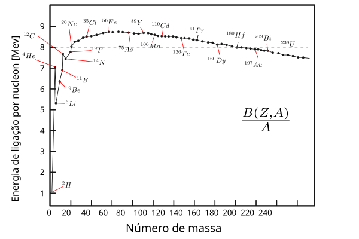
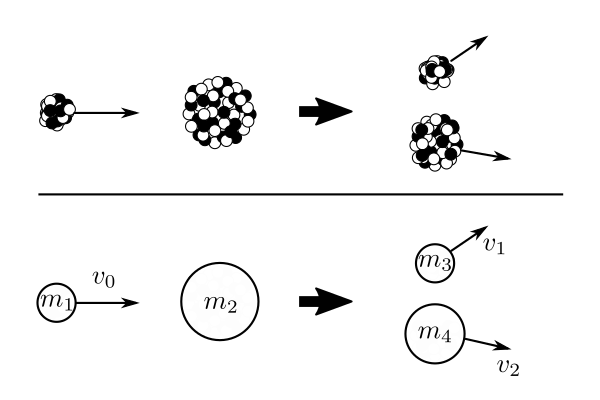
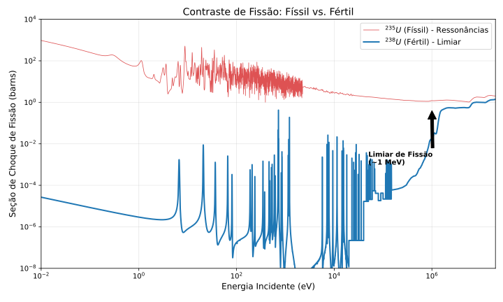
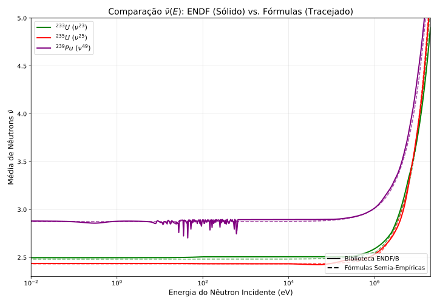

1. Fundamentos Energéticos
Para entender a energética do processo de fissão, precisamos primeiramente olhar para a curva de energia de ligação e, mais especificamente, para a variação (ou derivada) dessa curva em relação ao número de massa.
A energia de ligação por núcleon atinge um máximo em torno de (região do Ferro/Níquel). Veja o comportamento na Figura 1.

Figura 1. Energia de ligação por núcleon para os principais nuclídeos estáveis. Note o pico em torno de e o decaimento suave para núcleos pesados.A análise da inclinação () dessa curva nos revela a direção termodinamicamente favorável para a liberação de energia:
-
Região de Inclinação Positiva: Em núcleos leves, a fusão libera energia.
-
Região de Inclinação Negativa: Em núcleos pesados, a curva é decrescente. Isso significa que reduzir o número de massa aumenta a energia de ligação média. Logo, a Fissão Nuclear (dividir um núcleo pesado para diminuir ) é o caminho para liberar a diferença de energia e alcançar maior estabilidade.
2. O Mecanismo: O Modelo do Núcleo Composto
Entendido o motivo energético, podemos definir a fissão nuclear como uma reação física na qual o núcleo de um átomo pesado e instável se divide em dois ou mais núcleos menores (mais leves), liberando uma quantidade imensa de energia.
A fissão nuclear é mais uma reação que procede através da formação de um Núcleo Composto. A dinâmica inicial é idêntica à da captura radiativa: primeiramente, forma-se um núcleo altamente excitado através da absorção da partícula incidente (geralmente um nêutron).
A diferença crucial reside no desfecho. Em vez de apenas emitir radiação gama e relaxar para o estado fundamental (captura), este núcleo composto — instável e severamente deformado — decai fissionando-se em dois núcleos mais leves (os fragmentos de fissão), liberando nêutrons e energia cinética.
3. Cinemática da Reação
A Figura 2 ilustra a cinemática desse tipo de reação binária em dois níveis de abstração.

Figura 2: Representação esquemática da cinemática. O diagrama ilustra a colisão de um projétil de massa contra um alvo , resultando na fragmentação em dois corpos e .-
A Colisão (Visual): O impacto desestabiliza o núcleo alvo, causando a sua ruptura em dois novos núcleos distintos que se afastam.
-
O Modelo Matemático: O corpo (projétil, ex: nêutron) viaja com velocidade em direção ao corpo (alvo). Após a interação, o sistema se divide nas massas e , que são arremessadas em direções opostas com velocidades e , demonstrando a conservação do momento linear.
4. Seções de Choque: Físsil vs. Fértil
Como a hipótese do núcleo composto sugere que o modo de desintegração é relativamente independente do mecanismo de formação (a “amnésia nuclear”), poderíamos esperar que as seções de choque de fissão exibissem uma estrutura de ressonância semelhante à da captura.
Isso é verdade para os isótopos físseis (, , ). Analisando a Figura 3, vemos na curva vermelha () uma “floresta” de picos ressonantes em baixas energias e uma seção de choque elevada na região térmica. Isso indica que a própria energia de ligação do nêutron capturado é suficiente para superar a barreira de fissão.

Figura 3. Seções de choque microscópicas de fissão (MT=18) para o U-235 (Físsil) e U-238 (Fértil).No entanto, a história muda para os núcleos férteis (, ). Na curva azul, vemos que a seção de choque é essencialmente nula em baixas energias. A reação só ocorre quando a energia do nêutron ultrapassa um limiar (threshold) de . Abaixo dessa energia, o núcleo composto não tem excitação suficiente para fissionar.
Comparação Físsil vs. Fértil (Código Python)
O script abaixo utiliza a biblioteca OpenMC para gerar o gráfico comparativo acima.
(O bloco de código Python original permanece aqui)
5. A Barreira de Fissão e Energia de Excitação
Uma pergunta natural surge da análise energética: Se a fissão libera energia e leva a um estado mais estável, por que os átomos de urânio na Terra não se fissionaram espontaneamente ao longo dos bilhões de anos?
A resposta reside na cinética do processo, não na termodinâmica. Embora o estado final (fissionado) seja energeticamente favorável, existe uma barreira de potencial que impede a transição imediata.
Podemos visualizar isso pelo Modelo da Gota Líquida. O núcleo é mantido coeso pela força nuclear (análoga à tensão superficial), que compete com a repulsão eletrostática entre os prótons (força coulombiana). Para que a fissão ocorra, o núcleo precisa se deformar, esticando-se de uma esfera para uma forma elipsoidal e, finalmente, para um “haltere”. Durante essa deformação inicial, a tensão superficial aumenta mais rápido que o ganho energético da repulsão coulombiana, criando uma barreira energética.
A altura dessa Barreira de Fissão () é tipicamente de 6 a 7 MeV para os actinídeos. Para que a fissão ocorra, o sistema precisa receber energia de excitação suficiente para superar essa barreira.
Isso pode ser induzido externamente de três formas principais:
-
Fotofissão: Aportando energia cinética pura através de um fóton de alta energia (raios gama) que atinja o núcleo e cause a deformação crítica.
-
Bombardeamento por Partículas Carregadas: Colidindo prótons, partículas alfa ou íons pesados contra o núcleo. No entanto, existe um custo energético adicional: como essas partículas têm carga positiva, elas precisam ser aceleradas a energias muito altas para vencer a Barreira de Coulomb e penetrar no núcleo.
-
Captura de Nêutrons (O Caminho dos Reatores): Quando um núcleo pesado () captura um nêutron, forma-se um núcleo composto excitado (). A energia de excitação () desse núcleo é a soma da energia cinética do nêutron incidente com a energia de separação do nêutron () (a energia liberada pela simples ligação do nêutron ao núcleo).
O ponto crucial para a engenharia nuclear é o balanço energético:
6. Física dos Materiais: Físsil vs. Fértil
A relação entre a energia de excitação e a barreira de fissão define a classificação dos combustíveis nucleares.
Se a energia de ligação do nêutron () sozinha for maior que a barreira de fissão (), a fissão ocorrerá mesmo com nêutrons de energia cinética nula (nêutrons térmicos). É essa propriedade que define os nuclídeos físseis (como e ).
No entanto, para a maioria dos nuclídeos pesados (como ), a energia liberada pela simples captura () não é suficiente para deformar o núcleo além do ponto de ruptura. O núcleo apenas vibra, emite um raio gama e retorna ao estado fundamental (captura radiativa). Nesses casos, o nêutron precisa trazer energia cinética extra (acima de um limiar, tipicamente 1 MeV) para que a soma supere a barreira. Estes são os nuclídeos fissionáveis com limiar.
O Papel da Força de Emparelhamento
A razão física para essa diferença reside no Termo de Emparelhamento (pairing term) da fórmula de massa semi-empírica. A natureza favorece a formação de pares de núcleons (nêutron-nêutron).
-
O caso do (Físsil): O alvo tem número de massa ímpar. Ao capturar um nêutron, torna-se (par-par). O emparelhamento desse nêutron extra libera uma quantidade enorme de energia ( alto), superando a barreira de fissão sem ajuda externa.
-
O caso do (Fértil/Limiar): O alvo já é par-par. Ao capturar um nêutron, torna-se (par-ímpar). O ganho de estabilidade é menor ( baixo), insuficiente para vencer a barreira sozinho.
Por que o Urânio-238 não sustenta reações em cadeia?
Embora o fissione com nêutrons rápidos, ele sofre espalhamento inelástico. Nêutrons nascidos da fissão (média de 2 MeV) colidem com o e perdem energia rapidamente, caindo abaixo do limiar de 1 MeV antes de causarem nova fissão. Por isso, reatores precisam de nuclídeos físseis para manter a criticalidade.
7. Fissão Espontânea e Tunelamento
Existe ainda uma terceira possibilidade: o núcleo fissionar sem nenhuma ajuda externa. Devido à natureza probabilística da Mecânica Quântica, o núcleo pode atravessar a barreira de potencial mesmo sem ter energia suficiente para passar “por cima” dela, através do Tunelamento Quântico.
Quando isso ocorre sem um nêutron incidente, chamamos de fissão espontânea. A probabilidade depende da massa do núcleo:
-
Urânio-238: A barreira é “espessa”. A meia-vida por fissão espontânea é de anos. O núcleo prefere decair emitindo uma partícula alfa ( anos).
-
Califórnio-252: A barreira é mais fina e o tunelamento é frequente, sendo usado como fonte de nêutrons comercial.
Importância na Operação de Reatores
Pode parecer irrelevante, mas em um reator com 100 toneladas de combustível, a fissão espontânea do gera cerca de 15 nêutrons/s por kg. Isso cria uma “população base” de nêutrons (milhões por segundo em todo o core) que permite aos instrumentos detectarem o reator e garantirem uma partida (startup) segura e controlada.
8. Seções de Choque de Fissão
Já observamos que a fissão nuclear é um processo que procede através da formação de um núcleo composto, em uma dinâmica muito semelhante à captura radiativa. Portanto, não é surpresa que as seções de choque de fissão exibam uma estrutura de ressonância considerável, cheia de picos e vales abruptos.
Figura 4: A seção de choque de fissão microscópica do Urânio-235 em função da energia incidente. Note a rica estrutura de ressonâncias na região epitérmica (1 eV a 1 keV) e o comportamento na região térmica.
Para compreender melhor essa estrutura complexa observada no gráfico, é fundamental analisar o comportamento da seção de choque em três faixas de energia distintas: a térmica, a epitérmica (ou de ressonância) e a rápida.
Na região térmica (baixas energias), a seção de choque de fissão geralmente varia de forma inversamente proporcional à velocidade do nêutron (). Nesta faixa, o nêutron possui energia cinética comparável à agitação térmica dos núcleos do meio, resultando em altas probabilidades de interação, especialmente para isótopos físseis.
À medida que a energia aumenta, entramos na região epitérmica, onde a estrutura de ressonâncias se torna predominante. Inicialmente, encontramos as ressonâncias resolvidas, onde os picos são bem definidos e espaçados, permitindo a distinção clara de cada nível energético do núcleo composto. No entanto, conforme avançamos para energias mais altas dentro desta região, ocorre um fenômeno crítico: o espaçamento entre os níveis de energia do núcleo excitado diminui drasticamente, enquanto a largura dos picos aumenta (devido, em grande parte, ao alargamento Doppler causado pela temperatura). Chega-se a um ponto onde as ressonâncias começam a se sobrepor de tal maneira que os instrumentos experimentais e a teoria não conseguem mais separar os picos individuais. Esta é a chamada região das ressonâncias não resolvidas. Nesta faixa, embora a estrutura física de picos ainda exista, observamos macroscopicamente apenas uma média flutuante, pois é impossível isolar a contribuição de cada estado quântico individual.
Por fim, na região rápida, a energia cinética do nêutron é tão elevada que as propriedades individuais das ressonâncias se fundem completamente, resultando em uma curva de seção de choque muito mais suave e contínua, que tende a decrescer com o aumento da energia (salvo em isótopos férteis, onde se observa o limiar de fissão).
É importante ressaltar que, na prática de projetos de reatores, não utilizamos esses dados “brutos” e complexos diretamente. As seções de choque utilizadas nos códigos computacionais (como as bibliotecas ENDF/B ou JENDL) são dados avaliados e processados. Elas passam por um rigoroso tratamento matemático e estatístico para reconstruir as ressonâncias onde possível e aplicar médias estatísticas adequadas onde a resolução não é viável, garantindo que tenhamos em mãos valores confiáveis e representativos para o cálculo.
9. A Liberação de Energia na Fissão
Quando o núcleo se divide, o processo não resulta apenas em dois grandes fragmentos. O evento é acompanhado pela emissão instantânea de vários nêutrons (os nêutrons prontos), bem como de numerosos raios gama, partículas beta e neutrinos.
E, claro, o processo libera uma quantidade colossal de energia. De fato, um simples olhar para a curva de energia de ligação por núcleon sugere que uma energia da ordem de 200 MeV será liberada em cada evento de fissão.
Por que tanta energia?
Para colocar isso em perspectiva, 200 MeV é cerca de 100 milhões de vezes mais energia do que qualquer reação química de combustão (como queimar uma molécula de metano, que libera alguns poucos eV).
A razão para essa discrepância gigantesca reside na natureza das forças envolvidas:
-
Reações Químicas: Envolvem o rearranjo de elétrons orbitais, governados pela Força Eletromagnética.
-
Reações Nucleares: Envolvem o rearranjo de núcleons no caroço do átomo, governados pela Força Nuclear Forte.
Como a Força Forte é ordens de magnitude mais intensa que a eletromagnética em curtas distâncias, a densidade de energia armazenada no núcleo é maior.
Distribuição da Energia Liberada
A energia total de MeV não aparece toda no mesmo lugar, nem no mesmo instante. Para o engenheiro nuclear, é fundamental distinguir entre a energia recuperável (que vira calor no reator) e a irrecuperável.
A tabela abaixo resume a distribuição típica da energia para a fissão do U-235 por nêutrons térmicos:
| Componente | Energia Média (MeV) | Tipo | Recuperável? |
|---|---|---|---|
| Energia Cinética dos Fragmentos | 168 | Pronta | Sim |
| Energia Cinética dos Nêutrons | 5 | Pronta | Sim |
| Raios Gama Prontos | 7 | Pronta | Sim |
| Decaimento Beta (dos produtos) | 8 | Atrasada | Sim |
| Decaimento Gama (dos produtos) | 7 | Atrasada | Sim |
| Antineutrinos | 12 | Atrasada | Não |
| TOTAL LIBERADO | ~ 207 MeV | ||
| TOTAL RECUPERÁVEL | ~ 195 - 200 MeV* |
*Nota: O valor recuperável frequentemente arredonda-se para 200 MeV pois inclui-se também a energia dos raios gama de captura (n, ) que ocorrem nos materiais do reator devido à absorção dos nêutrons.
Vamos analisar os principais componentes:
1. Energia Cinética dos Fragmentos (O Calor Principal)
A maior parte da energia (~80%, ou 168 MeV) aparece na forma de energia cinética pura dos dois grandes fragmentos de fissão.
A física aqui é simples: no momento exato em que o “pescoço” do núcleo se rompe, temos dois núcleos positivamente carregados se tocando. A repulsão Coulombiana entre eles é brutal. Eles são acelerados violentamente em direções opostas pela força elétrica.
Como esses fragmentos são pesados e muito carregados, eles interagem fortemente com a matéria. Eles viajam apenas alguns micrômetros dentro do combustível antes de colidirem com outros átomos da rede cristalina, transferindo toda essa energia cinética em forma de vibração (calor). É este mecanismo que gera a maior parte do calor para girar a turbina.
2. A Energia “Perdida” (Neutrinos)
Cerca de 10 a 12 MeV da energia total é carregada pelos antineutrinos emitidos durante o decaimento beta dos produtos de fissão. Como neutrinos praticamente não interagem com a matéria (eles podem atravessar anos-luz de chumbo sem parar), essa energia escapa do reator e da Terra, perdendo-se no espaço. Ela não contribui para a geração elétrica.
O Calor de Decaimento
Uma observação crítica na tabela acima é a distinção entre energia Pronta (liberada em s) e energia Atrasada (liberada ao longo de segundos, dias ou anos).
Os produtos de fissão nascem “ricos em nêutrons” e instáveis. Para alcançar a estabilidade, eles decaem via emissão beta e gama. A soma dessas energias (Beta + Gama Atrasado) representa cerca de 15 MeV por fissão, ou aproximadamente 7% da energia recuperável total.
Embora pareça uma fração pequena, em um reator operando a 3000 MW térmicos, isso representa mais de 200 MW de potência térmica gerada exclusivamente por radioatividade, não por fissão.
A implicação de segurança é imensa:
Como esse calor vem do decaimento radioativo (que segue leis de meia-vida e não pode ser “desligado”), ele persiste mesmo após o reator ser desligado (scram). Esse Calor de Decaimento é o grande vilão em acidentes nucleares (como Fukushima ou Three Mile Island). Se o sistema de refrigeração falhar após o desligamento, esse calor residual é suficiente para derreter o núcleo do reator. Portanto, a engenharia de sistemas de resfriamento de emergência é inteiramente dimensionada para remover esses “meros” 7% de energia atrasada.
O Calor de Decaimento (Decay Heat) e a Contribuição Alfa
Uma observação crítica na tabela acima é a distinção entre energia Pronta (liberada em s) e energia Atrasada (liberada ao longo de segundos, dias ou anos).
Os produtos de fissão nascem “ricos em nêutrons” e instáveis. Para alcançar a estabilidade, eles decaem via emissão beta e gama. A soma dessas energias representa cerca de 15 MeV por fissão, ou aproximadamente 7% da energia recuperável total.
A Contribuição dos Actinídeos (Decaimento Alfa)
Historicamente, focava-se apenas na radiação beta e gama dos produtos de fissão. No entanto, em reatores modernos com alta queima (high burnup) ou combustíveis MOX (Óxidos Mistos), a captura de nêutrons gera uma quantidade significativa de actinídeos pesados (como , , ). Esses nuclídeos decaem predominantemente por emissão Alfa.
Embora a contribuição imediata das partículas alfa para o calor de desligamento seja pequena (comparada aos produtos de fissão nos primeiros dias), ela se torna dominante no longo prazo (anos e décadas após a retirada do reator). A partícula alfa, sendo pesada e carregada, deposita toda a sua energia ( por decaimento) localmente no combustível, mantendo-o quente por séculos.
Implicações de Segurança
Independentemente da fonte (beta, gama ou alfa), a implicação para a engenharia é imensa:
Como esse calor vem do decaimento radioativo (que segue leis estatísticas de meia-vida e não pode ser “desligado”), ele persiste mesmo após a reação em cadeia cessar (scram). Esse Calor de Decaimento é o grande desafio em acidentes nucleares.
Em um reator típico operando a 3000 MW térmicos, esse calor residual representa mais de 200 MW no instante do desligamento. Se o sistema de refrigeração falhar, essa potência é suficiente para derreter o núcleo do reator em poucas horas. Portanto, os sistemas de resfriamento de emergência (ECCS) são dimensionados especificamente para remover esses meros 7% de energia atrasada.
10. Produtos da Reação de Fissão
Emissão de Nêutrons
Tão fundamental quanto a energia liberada na fissão é o fato de que múltiplos nêutrons são emitidos em cada evento. São estes nêutrons que viabilizam a propagação da reação em cadeia.
A vasta maioria destes nêutrons é emitida quase instantaneamente — dentro de segundos após a fissão. Estes são denominados nêutrons prontos (prompt neutrons) e constituem mais de 99% do total emitido.
No entanto, uma fração muito pequena — da ordem de para o — surge com um atraso de tempo apreciável, resultante do decaimento radioativo subsequente de certos produtos de fissão (precursores). Embora representem uma fração minúscula, esses nêutrons atrasados (delayed neutrons) são vitais para a segurança e operacionalidade do reator nuclear. A presença deles introduz uma inércia temporal na resposta do reator, transformando um sistema que seria instável e de difícil controle em um sistema controlável com segurança.
O número total de nêutrons (prontos + atrasados) liberados varia estocasticamente de evento para evento. Para fins de física de reatores, utilizamos o valor médio, denotado por , o número médio de nêutrons liberados por fissão. Este valor é função tanto do isótopo físsil quanto da energia do nêutron incidente (), tendendo a crescer linearmente com o aumento desta energia.
Historicamente, ajustes empíricos precisos para foram fundamentais para o desenvolvimento da neutrônica. As correlações clássicas apresentadas (1965)^[Keepin, G. R. (1965). Physics of Nuclear Kinetics. Addison-Wesley, Reading, Mass.] que descrevem essa dependência energética (com em MeV) da seguinte forma:
Nota sobre a notação:
Os índices sobrescritos nas equações acima seguem a nomenclatura histórica utilizada nos laboratórios durante a era do Projeto Manhattan e mantida em códigos clássicos como o MCNP:
49: Z=94, A=239 ()
25: Z=92, A=235 ()
23: Z=92, A=233 ()
Vamos ver o comportamento em função de energia.

Figura 5: Número médio de nêutrons por fissão em função da energia incidente, dados comparados.O gráfico destaca a hierarquia de produção de nêutrons, com o apresentando o maior rendimento, e contrapõe a simplificação linear das fórmulas semi-empíricas à precisão física da biblioteca ENDF/B. A diferença fundamental reside na capacidade da ENDF de capturar as flutuações de na região das ressonâncias — um reflexo direto da dependência do spin do núcleo composto — e a curvatura sutil em altas energias.
Análise da Dependência Energética de : Fórmulas Clássicas vs. Bibliotecas Avaliadas
O gráfico apresenta a variação do número médio de nêutrons emitidos por fissão () em função da energia do nêutron incidente, cobrindo desde a região térmica ( eV) até energias rápidas (acima de 10 MeV). A comparação é feita para os três principais isótopos físseis: (verde), (vermelho) e (roxo).
1. Comportamento Geral e Hierarquia Isotópica
Observamos que o possui o maior valor de em todo o espectro energético (iniciando em ), seguido pelo () e, por fim, o (). Essa hierarquia é fundamental para a economia de nêutrons em reatores regeneradores (breeders), onde o excesso de nêutrons do plutônio é uma vantagem decisiva.
2. A Região Térmica e de Ressonâncias (Baixas Energias)
As linhas tracejadas representam as fórmulas semi-empíricas clássicas, que historicamente tratavam como uma constante na região térmica e epitérmica.
No entanto, os dados da biblioteca ENDF/B (linhas sólidas) revelam uma física muito mais rica. É notável, especificamente na curva do (roxo) entre 10 eV e 1 keV, a presença de flutuações abruptas.
Essas oscilações na região das ressonâncias não são ruído. Elas refletem a dependência do valor de com o spin () das ressonâncias do núcleo composto. Dependendo do canal de spin pelo qual a fissão ocorre, a energia de excitação disponível para a emissão de nêutrons varia ligeiramente, causando essa estrutura fina que as fórmulas lineares ignoram.
3. A Região Rápida e o Aumento de
A partir de aproximadamente 1 MeV, ambas as abordagens mostram um crescimento acentuado de .
As fórmulas semi-empíricas (tracejadas) tentam modelar esse comportamento com um ajuste linear simples do tipo .
Os dados da ENDF/B (sólidos), embora sigam a tendência geral de crescimento, mostram que a relação não é perfeitamente linear, apresentando curvaturas sutis que incorporam efeitos de fissão de segunda chance (onde o nêutron é emitido antes da fissão ocorrer) e outras complexidades da dinâmica nuclear em altas energias.
Para cálculos de criticalidade em reatores térmicos convencionais, a aproximação constante (tracejada) costuma ser suficiente. Contudo análises de precisão que envolvam a física de ressonâncias do Plutônio, o uso das bibliotecas avaliadas detalhadas (ENDF/B) torna-se indispensável para capturar corretamente o balanço neutrônico.